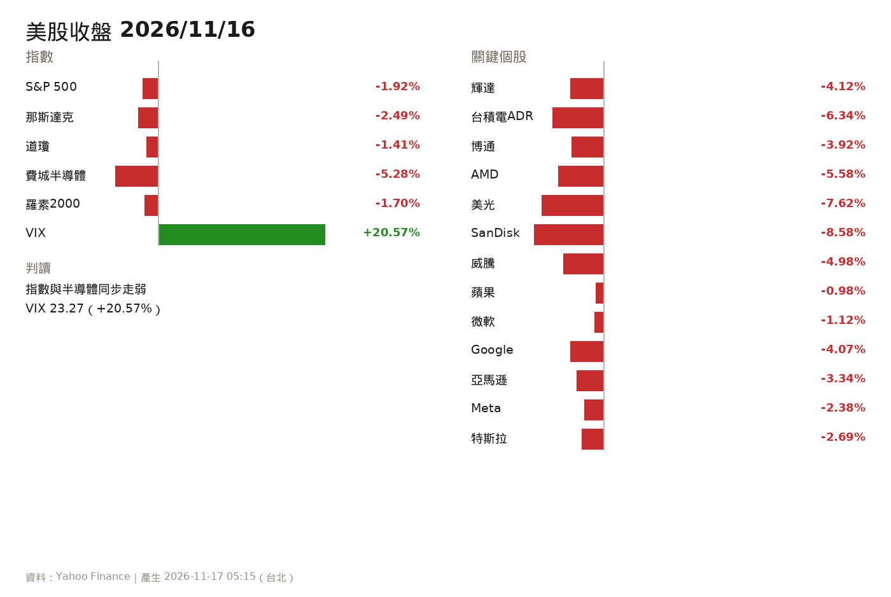
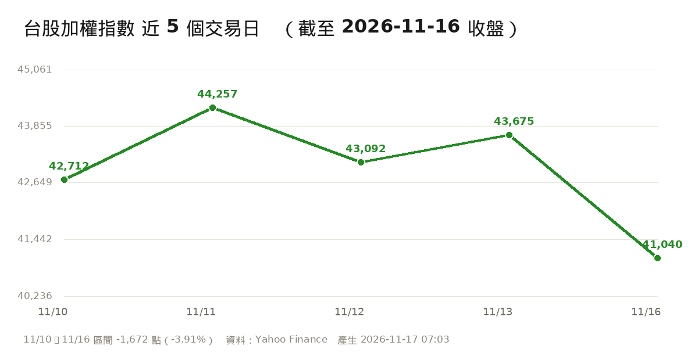
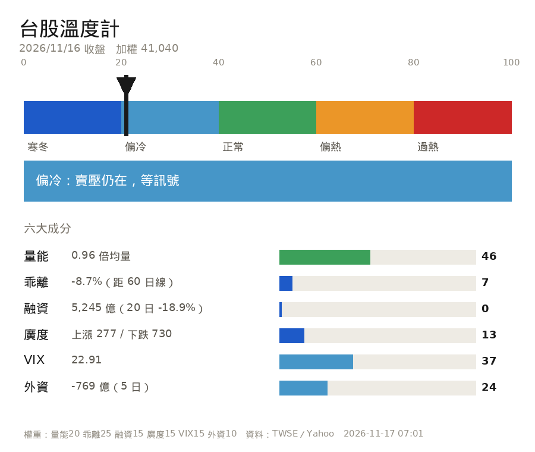
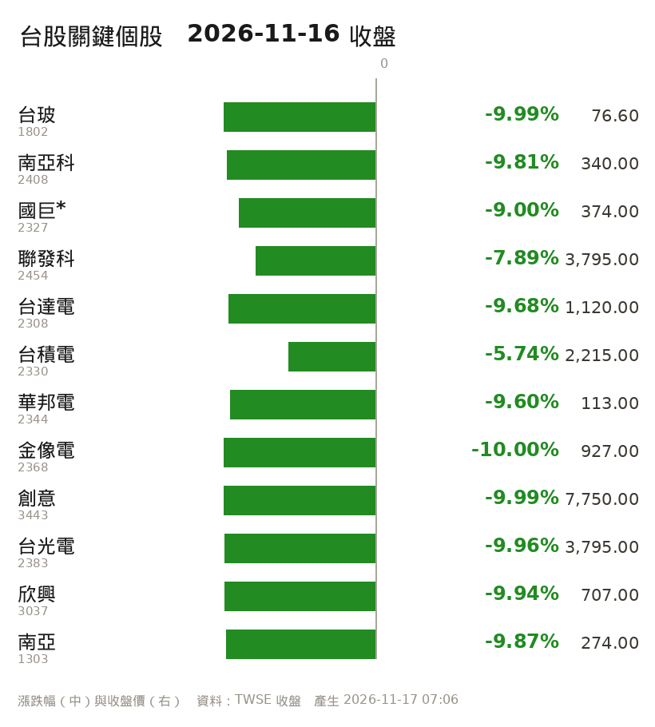
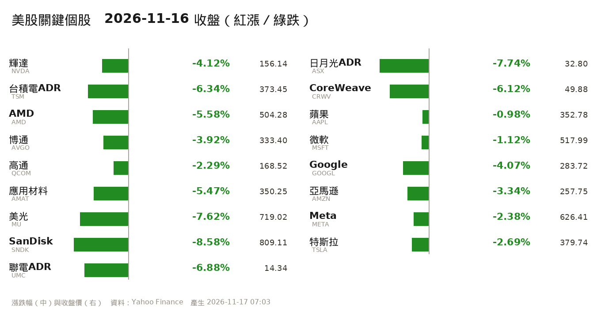
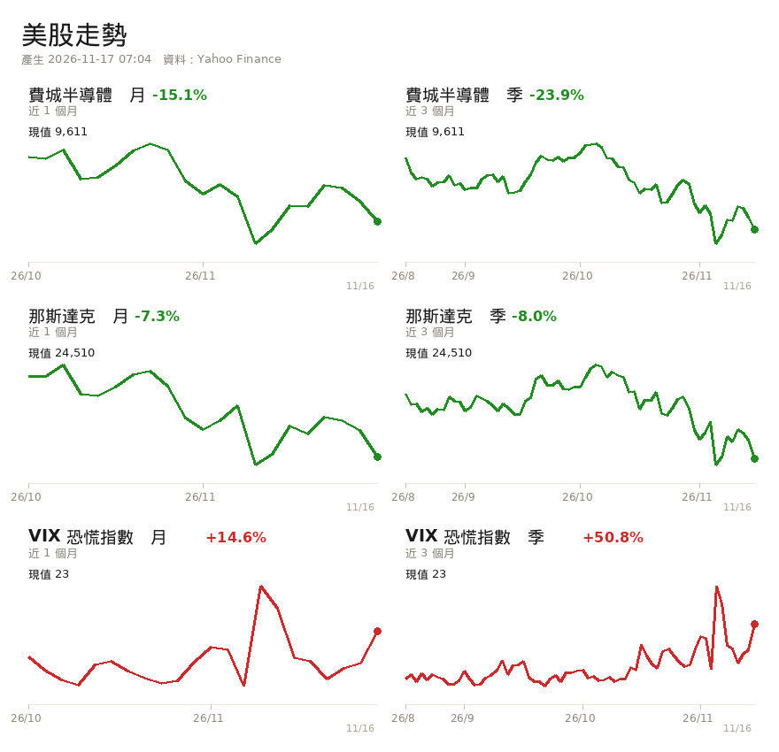
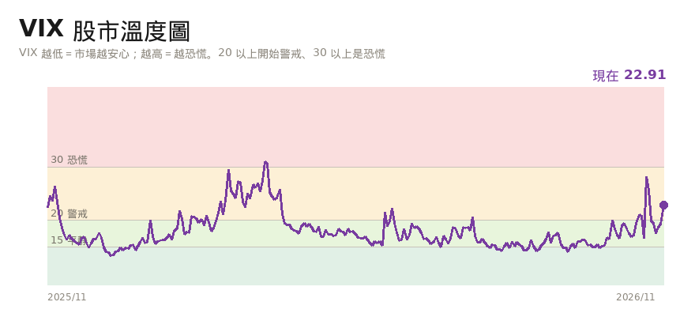
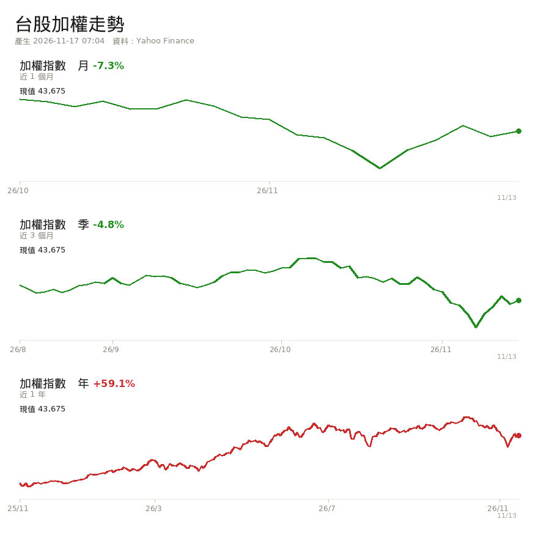
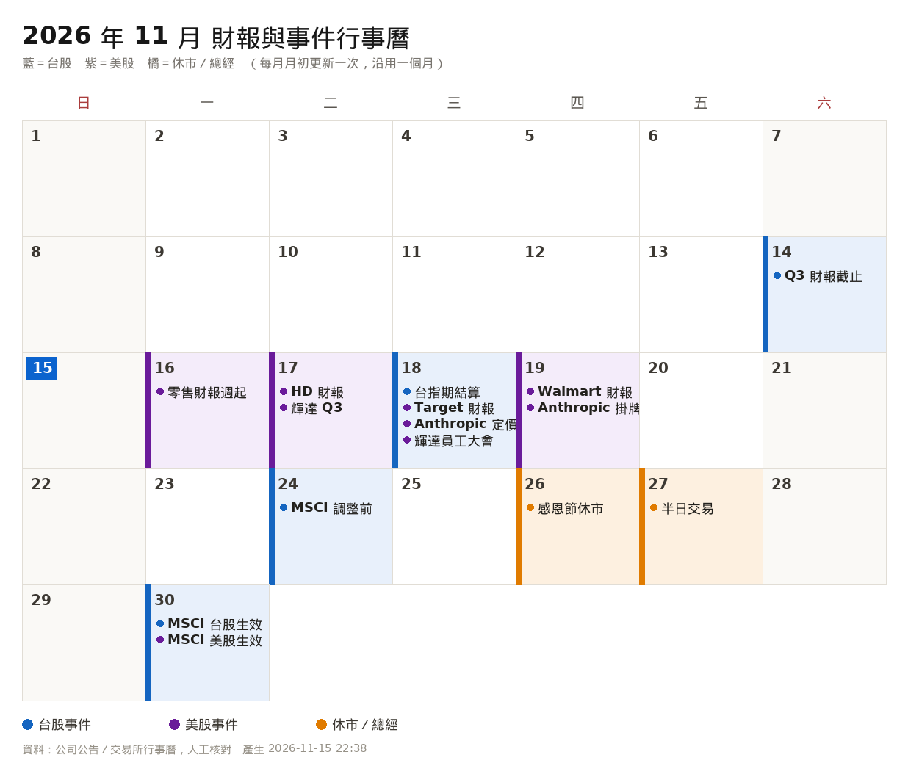

2026-11-17 投資日報2026-11-23 13:24
重點提醒｜Emmy（持續中）
來源：
財經頻道/Emmy追劇時間/Emmy重點提醒追蹤.md。未解除就會每天出現；判定解除當天標「過期」，隔天起不再列出。
- E1 輝達 NVDA／黃仁勳 真正風險不是技術洩密，是「走私晶片＋長期遊說晶片禁令」的國安問題。已持續 5 天。⬆️ 惡化：11/16 輝達收 156.14（-4.12%），自 10 月高點已跌約 32%、上週 -13%、六週連黑（2012 年以來最長）；瑞穗目標價 250→220、瑞銀 300→240；財長貝森特要求董事會找「外部人選」，《金融時報》報導董事會拒絕讓黃仁勳回鍋（川普說不介意，董事會相反）。11/18 台灣清晨 05:20 公布、06:00 法說，是沒有黃仁勳的第一份財報（共識營收約 1,090 億、EPS 約 2.47）。解除條件：正式（非臨時）新任 CEO 定案並公開承諾對台供應鏈與產品路線不變，且財報與後續國會簡報後無新增出口管制。
- E2 台股／美股大盤 民主黨期中選舉大勝 → AI 資料中心與科技業監管收緊的恐慌，是 11/05-11/06 崩盤主因。已持續 9 天。➡️ 未變（方向互抵）：一面緊——美國商務部擬把新加坡、馬來西亞、泰國等 7 國納入先進 AI 晶片出口許可，並堵「租用算力」漏洞（研議中，未公布）；一面鬆——《華爾街日報》稱川普政府準備公布 24 家「AI 國家冠軍」（含輝達）名單，入選者可加速出口許可審查（名單未公布）。11/19 川普、習近平、普丁深圳 APEC 場邊三方會談仍照計畫。解除條件：具體監管法案送進國會並過關，或政策明確轉向寬鬆。
- E3 台股／美股大盤 「熊市要來了嗎、該獲利了結嗎」——她事前提示了這一波下殺。已持續 16 天。⬆️ 惡化：11/16 加權收 41,040.08，單日 -2,635.04 點（-6.03%），史上第二大收盤跌點，收在當日最低；成交 8,928 億（全日 9,031 億）；三大法人賣超 1,140.55 億（外資 -701.89、投信 -179.63 史上最大、自營 -259.03）；上市跌停 85 家（全場合計 168 家、17 檔千金股跌停）；融資維持率 170.96%→158.59% 進追繳警戒；台指期 -2,954 收 40,885、逆價差 155 點、外資淨空單 96,787 口。解除條件：指數站回季線且外資轉為連續買超。
- E4 油價／布蘭特原油 中東戰火推升油價 → 通膨壓力 → 股市下跌。已持續 19 天。⬇️ 緩解：布蘭特 11/16 收 91.84（-0.99%）、WTI 85.06（-1.70%），連續第 2 個交易日下滑，已低於 11/13 的 95.84。但仍在解除線 90 之上，胡塞與波灣航運風險未消除。解除條件：布蘭特回落至 90 美元以下且中東衝突降溫。
- E5 記憶體族群／8299 群聯 大摩一次降 6 檔記憶體、目標價腰斬，群聯 2,588→1,357 降為「劣於大盤」；理由是 2028 供需恢復平衡＋美國資料中心約兩成產能延後到 2029。已持續 6 天。⬆️ 惡化：群聯 11/16 收 1,515（-7.62%），已跌破 1,570 減碼區、距 1,500 只 1%；同日美光 -7.62%、SanDisk -8.58%、記憶體指數 -6.4%、威騰 -4.98%，是全市場最弱族群。現價仍比大摩目標 1,357 高約 11.6%。下一個公司級消息點：11/27 13:30 富邦證券投資論壇（已公告）。解除條件：NAND 現貨報價重新轉強且外資對群聯轉為買超，或大摩回補評等。
- E6 台股 AI 供應鏈／Vera Rubin 平台 市場傳出新一代機架級 AI 平台 Vera Rubin 因 HBM 供應與載板翹曲（Warpage）問題，延後至明年上半年才放量出貨。今天提出。🆕 新增：來源為媒體與分析師轉述（中時／郭哲榮直播），未經輝達或供應鏈公司公告證實，屬消息面。若為真，直接影響 2330 先進封裝與載板（3037 欣興、8046 南電）、散熱、電源等出貨時程。解除條件：輝達財報或法說明確給出 Vera Rubin 出貨時程且未延後，或公司否認。
📅 上週週報（W46）紅綠摘要
來源：
財經頻道/週報/2026-W46.md（11/15 產出，彙整 11/09～11/15）。今天是新一週，這份是「上週的總結」，不是今天的新資料。
- 🔴 上週看多 11 檔／族群：2330 台積電（3 次）、2454 聯發科（2 次）、PCB／玻纖布（2 次）、3443 創意、IP／ASIC 族群、2317 鴻海、1303 南亞、2327 國巨。
- 🟢 上週危機 9 項，E1～E5 全部未解除（今天 E1／E3／E5 已轉為惡化，見最上面）。
- 上週最大的矛盾：週線 +3,973 點（+10.01%，史上最大單週漲點），但指數從沒站回季線、外資只買 1 天。11/16 一根 -2,635 點的長黑，把這個矛盾一次結清。
🌙 盤前跨市場預警（06:40 產出，摘要）
完整檔案：
日報/素材/2026-11-17_盤前預警.md。等級 L3（四條門檻同時成立）。
① 美股昨夜（已發生）：道瓊 -1.41%、S&P -1.92%、那斯達克 -2.49%、費半 -5.28%、VIX 22.91（+18.70%）。輝達 156.14（-4.12%）、台積電 ADR 373.45（-6.34%）、日月光 ADR -7.74%、聯電 ADR -6.88%。跌最重的不是 GPU，是記憶體與設備（記憶體指數 -6.4%、設備 -5.49%、SanDisk -8.58%）。
② 原因（依重要性）：換帥方向變成新利空（貝森特要求外部人選、FT 稱董事會拒絕回鍋）→ 商務部擬把 7 國納入 AI 晶片出口許可、堵「租算力」漏洞（研議中）→ 輝達財報前的「不敢抱」＋Anthropic 抽資金 → 利率 5% 以上 → 台股自身融資追繳賣壓。
③ 影響期間：短期 1～2 週偏空（11/17 輝達財報、11/18 台指期結算＋台積電海外法說、11/19 Anthropic 掛牌＋國會簡報，全擠在三個交易日內）；中期 1～3 個月震盪偏空，關鍵是「沒有黃仁勳的輝達該給幾倍本益比」；長期看結構，台積電「GPU 換 ASIC 照樣接單」，但記憶體是評價重定、不是跌完自動回來。
④ AI 建議（收斂；注意你目前空手）：今天是「不准摸底」日，不是「撿便宜」日。三檔若真要建第一批，-7% 停損參考（以 11/16 收盤暫代）：2330 → 2,060、2454 → 3,529、8299 → 1,409；順序 2330 優先於 2454，2454 優先於 8299（ADR 溢價、ASIC 邏輯、評價最貴）。等 11/18 輝達財報與台指期結算過後再決定。
⑤ YouTube 建議：宏爺 11/16［危機］費半初步跌破年線、台股均線死叉、利率 5% 讓高本益比走鋼索；［看多］台積電 Q4 指引 +14%、外資殺低後反手買——但外資 11/16 立刻回頭賣 701.89 億，這條已被打臉。Emmy 最新仍是 11/13 貼文（風險未結束）。
⑥ 新聞／券商主流看法：國泰證期「輝達落底看三訊號、台股三風險未除、不排除第二隻腳」；元大「40,000～43,000 大箱型」；新光「守住 41,000 且留下影線才算初步止跌」；群益「開低長黑、再測大區間下緣」；金管會／證交所「緊盯、必要時救市」。
⑦ 綜合建議：① 今天先不買，寫下停損價；② 8299 優先減；③ 等 11/18 兩件事過去再決定部位。
🚨 警報狀態
| 項目 | 狀態 | 事實 |
|---|---|---|
| 警報回覆 | ✅ 已回覆 | alert_ack.json＝2026-11-16 10:13、L2（昨天的警報你已回「已處理」） |
| 排程 | ✅ 兩支都在跑 | 危機警報 盤中每5分（09:00～13:55）、危機警報 影片檢查22:20 |
| 昨日盤中 | L2／L3 觸發 | 11/16 盤中跌幅超過門檻，警報有發；收盤 -6.03% 為史上第二大收盤跌點 |
| 今天 | 09:00 起每 5 分監控 | 今天開盤是「崩盤後第一天」，任何 -3% 以上都會立刻發 L2 |
| 頻道歸檔 22:00（11/16） | ❌ 失敗（interrupted） | 連續第 2 晚失敗，沒產生新影片筆記；最新仍是一綺 11/13、宏爺 11/16 |
| 粉專貼文 06:20 | ⚠️ 失敗 → 已補 | cron 用的 python 缺 websocket 模組（已補裝）；資料我已於 07:03 手動抓完，本日報與消息面頁籤用的是真資料 |
⓿ 先回答三個問題：消息面 vs 已發生
這一節是為了不讓你被新聞帶著走。紅底＝已發生（有數字或公司公告）；橘底＝消息面傳聞（未經證實）；⏳＝還沒發生。
| 項目 | 狀態 | 說明 |
|---|---|---|
| 台股 11/16 崩 2,635 點、外資賣 701.89 億、融資維持率掉到 158.59% | 已發生 | 證交所收盤資料，史上第二大收盤跌點，收在當日最低 |
| 黃仁勳「會不會回鍋」 | 消息面 | 兩說並存：川普說「不介意看到他回鍋」，《金融時報》說董事會拒絕。都不是公司公告 |
| 商務部把 7 國納入 AI 晶片出口許可、川普「AI 國家冠軍」24 家名單 | 消息面 | 一緊一鬆，兩件都還沒正式公布（一件是管制、一件是放寬），方向互抵，所以 E2 列「未變」 |
| Vera Rubin 平台延後到明年上半年出貨 | 消息面 | 媒體與分析師轉述，輝達與供應鏈公司都沒有公告（今天新增列為 E6） |
| 輝達第三季財報（台灣 11/18 約 05:20） | ⏳ 還沒發生 | 共識營收約 1,090 億、EPS 約 2.47。這是本週唯一的「事實來源」 |
怎麼用：今天盤中聽到的任何「輝達要換誰、管制要多嚴、Rubin 要延後」都先當傳聞，只有 11/18 清晨那份財報與法說是可查證的。在那之前，動作只做「降低風險」，不做「押方向」。
① 一句話結論
今天是崩盤後第一天，而你手上是空手（現金 100%）——這是這波最大的優勢，任務不是搶反彈，是把「什麼條件才准進場」寫成白紙黑字，然後照著等。台股溫度只有 21 分（偏冷），距離「寒冬」只差 1 分。
今天要守的紀律（依重要性）：
- 先承認你沒有部位風險（
交易日誌/2026-11-16.md：今日仍為空手）。所以今天「不做事」是正確的動作，不是偷懶。 - 不准摸底：跌停打開不是買點。11/16 上市 85 家跌停、17 檔千金股跌停，這種盤隔天再殺一段的機率，高於直接 V 轉。
- 進場許可證只有一張：外資現貨連 2 日買超 ＋ 指數站回 42,000 且 3 日不破（任兩件成立才談）。今天一件都沒發生。
- 今天 41,000 是生死線：守不住，下一站年線 39,210，最後防線 11/6 低點 37,837。
- 等 11/18 兩件事（輝達財報＋台指期結算）過後再決定要不要買第一批；在那之前現金留在手上，不要因為「怕錯過」而提前進場。
② 國際與美股
11/16（一）美股收盤（已發生）
| 指數 | 收盤 | 漲跌點 | 漲跌% |
|---|---|---|---|
| 道瓊 | 51,608.17 | -739.38 | -1.41% |
| S&P 500 | 7,416.59 | -145.08 | -1.92% |
| 那斯達克 | 24,509.76 | -626.51 | -2.49% |
| 費城半導體 | 9,610.65 | -535.67 | -5.28% |
| 羅素 2000 | 2,742.94 | — | -1.70% |
| VIX | 22.91 | +3.61 | +18.70% |

關鍵個股（19 檔，全部用 Yahoo Finance 11/16 收盤，非記憶）
| 股票 | 收盤 | 漲跌% | 一句判讀 |
|---|---|---|---|
| 輝達 NVDA | 156.14 | -4.12% | 自 10 月高點 -32%，六週連黑；財報前沒人敢抱 |
| 台積電 ADR TSM | 373.45 | -6.34% | 折台股每股約 2,456 元，對現貨仍有約 10.9% 溢價 |
| AMD | 504.28 | -5.58% | 換帥的「受益者」也跌，代表殺的是整個 AI 評價 |
| 博通 AVGO | 333.40 | -3.92% | ASIC 陣營相對抗跌，但仍守不住 |
| 高通 QCOM | 168.52 | -2.29% | 手機鏈，跌幅比晶片同業輕 |
| 應用材料 AMAT | 350.25 | -5.47% | 設備股是重災區（設備指數 -4.9%） |
| 美光 MU | 719.02 | -7.62% | 跌破 7 月底前低，M 頭風險上升 |
| SanDisk SNDK | 809.11 | -8.58% | 全場最弱，NAND 評價重定中 |
| 聯電 ADR UMC | 14.34 | -6.88% | 成熟製程同樣被殺 |
| 日月光 ADR ASX | 32.80 | -7.74% | 封測跟著 AI 鏈走弱 |
| CoreWeave CRWV | 49.88 | -6.12% | 新興雲端＝AI 融資緊縮的第一排 |
| 蘋果 AAPL | 352.78 | -0.98% | 大型科技裡最抗跌，資金往「非 AI 故事」躲 |
| 微軟 MSFT | 517.99 | -1.12% | 同樣是避風港，跌幅不到 1.2% |
| Google GOOGL | 283.72 | -4.07% | TPU 題材這次沒護身 |
| 亞馬遜 AMZN | 257.75 | -3.34% | 資本支出疑慮跟著 AI 殺 |
| Meta | 626.41 | -2.38% | 相對抗跌 |
| 特斯拉 TSLA | 379.74 | -2.69% | 跟跌但幅度中等 |
| 英特爾 INTC | 55.47 | -7.02% | 記憶體／晶圓兩邊都打 |
| 威騰 WDC | 280.93 | -4.98% | 硬碟跟著記憶體弱 |
上漲的部分（別只看跌）
- 這 19 檔裡沒有一檔上漲，最抗跌的是蘋果 -0.98%、微軟 -1.12%。
- 真正收紅的是防禦型類股：寶僑 PG +1.90%、麥當勞 MCD +0.99%、AT&T +0.81%、沃爾瑪 WMT +0.25%、可口可樂 KO +0.23%、公用事業 XLU +0.18%、必需消費 XLP +0.27%。
- 這代表什麼：錢不是離開股市，是從「AI 成長股」搬到「領股息、看現金流」的股票。這種輪動對台股不利，因為台股權值幾乎全是成長股。但也要記得：這不是 2008 式的全面崩盤，道瓊只跌 1.41%、必需消費還收紅。
上漲主因（防禦股）：利率高檔＋不確定性高 → 資金找「現在就有現金流」的股票；美元指數創 2025/4 以來新高，也讓出口導向的成長股相對吃虧。
下跌主因：① 輝達換帥的治理折價擴大（已發生）；② 商務部擬擴大 AI 晶片出口許可到 7 國（消息面，研議中）；③ 輝達財報前不敢抱＋Anthropic 抽資金（已發生）；④ 10 年期殖利率 5.12%（已發生）。
跨市場
| 項目 | 數值 | 漲跌 | 判讀 |
|---|---|---|---|
| 美 10 年期殖利率 | 5.12% | +14bp | 高檔，對高本益比最不利 |
| 美 5 年期殖利率 | 4.935% | +13bp | 整條曲線往上，不是單純長端 |
| 美元指數 | 103.59 | +0.66% | 2025/4 以來新高，新興市場壓力 |
| 布蘭特原油 | 91.84 | -0.99% | 連 2 日回落，但仍 >90 |
| WTI 原油 | 85.06 | -1.70% | 同上 |
| 黃金 | 3,859.0 | -3.54% | 避險資產也在跌＝市場在換現金，不是單純避險 |
| 美元／台幣 | 32.961 | +0.53% | 台幣續貶，外資匯出壓力未消 |
| VIX | 22.91 | +18.70% | 緊張，但還沒到 30 的恐慌區 |
黃金 -3.54% 是今天最容易被忽略的一條：避險資產與風險資產同時下跌，代表市場要的是「現金」，這種盤要先保住子彈，不是急著換標的。
③ 台股覆盤

11/16（一）收盤（已發生）
| 項目 | 數值 | 說明 |
|---|---|---|
| 加權指數 | 41,040.08 | -2,635.04 點（-6.03%），史上第二大收盤跌點 |
| 收盤位置 | 當日最低 | 尾盤沒有拉抬，收最差 |
| 成交金額 | 8,928.04 億 | 證交所全日 9,031.15 億 |
| 三大法人 | -1,140.55 億 | 外資 -701.89、投信 -179.63（史上最大）、自營 -259.03 |
| 上市漲停／跌停 | 8 家／85 家 | 全場合計跌停 168 家、17 檔千金股跌停 |
| 櫃買指數 | -6.80% | 中小股融資多殺多 |
| 台指期（11月） | 40,885 | -2,954 點，逆價差 155.08 點 |
| 外資期貨淨空單 | 96,787 口 | 較前日減 4,083 口（仍是高檔） |
| 融資餘額 | 5,244.98 億 | 單日只減 120.99 億；維持率 170.96%→158.59%（追繳警戒） |
| 台股 VIX | 48.85 | +11.01 |
| 八大行庫 | 買超 206.19 億 | 護盤跡象 |
盤勢節奏：開盤 43,512（-0.4%）→ 開低走低、一路破 43,000、42,000 → 收 41,040 當日最低。權值電子領跌，封測、PCB、CPO、散熱全倒；原本抗跌的金融、傳產盤中也翻黑，只剩零星個股。台積電尾盤爆出 8,000 多張、近 200 億賣單，單日市值蒸發約 3 兆。
技術位置：季線約 46,135（還差 -11.04%）、年線約 39,210（下方 -4.46%）。41,000 是整數關卡，年線是最後一道有形支撐，11/6 低點 37,837 是最後防線。
反彈確認條件（三件任兩件才成立）：外資現貨連 2 日買超、台指期淨空單降到 8 萬口以下、指數站回 42,000 且 3 日不破。今天一件都還沒發生。
④ 頻道影片重點
資料來源：
財經頻道/宏爺講股/2026-11-16_股市又暴跌出大事了/（11/16 23:38）、財經頻道/一綺聊股/2026-11-13_黃仁勳下台後台廠利多/。影片觀點不等於事實。
🔴 看多／加碼訊號
- 宏爺〔基本面〕台積電 Q4 指引營收 523～543 億美元，中值比 Q3 高 14%；Q3 上市櫃稅後 1.96 兆、年增 74.51%（⏱ 約 [20:40]、[20:10]，宏爺 11/16）。
- 宏爺〔基本面〕台積電 10 月營收 5,868 億元、年增近六成；公司另投資 OpenAI 與 Anthropic 各不超過 5 億美元，直接深化 AI 生態系（國泰證期整理，11/16）。
- 宏爺〔選股法〕只看相對抗跌、打下影線、且大股東／內部人低接的優質股（⏱ 約 [12:20]）。
- 一綺〔ASIC〕CSP 若把算力從 GPU 轉向自研 AI 晶片，仍需聯發科的設計整合能力；她 11/13 兩次加倉聯發科、當日轉獲利（⏱ [07:26]、[08:31]）。注意：這是她的成本與資金，不是你的理由。
- 一綺〔PCB〕資金有限她會選 PCB 不選記憶體，理由是這波沒漲那麼多、股價偏低（⏱ [33:20]、[34:30]，11/11）。
🟢 危機／減碼訊號
- 宏爺〔技術〕費半初步跌破年線，站不回去就形成各均線彎頭向下的空頭架構（⏱ 約 [04:10]）。昨夜費半再 -5.28%，年線更加失守 → 已惡化。
- 宏爺〔技術〕台股月線、季線、20 週均線死叉後持續下彎，多方只剩年線（⏱ 約 [09:30]）；櫃買重挫 5%＋、高基期中小股融資多殺多（⏱ 約 [10:10]）。11/16 實際櫃買 -6.80%，比他說的更兇。
- 宏爺〔利率〕利率 5% 以上讓高本益比估值走鋼索（⏱ 約 [13:20]）；美光跌破 7 月底前低、務必守住否則易成 M 頭（⏱ 約 [22:00]）→ 昨夜美光再 -7.62%，M 頭風險上升。
- 一綺〔記憶體〕她明確說「不會把有限的資金投入到記憶體股票」（⏱ [19:37]，11/13），理由趨勢下滑、難突破前高。
- 一綺〔技術〕11/13 開高 1,000 點後漲幅收斂＝上面有月線、季線套牢賣壓，不是無腦多（⏱ [02:20]）。
- 宏爺〔被打臉的看多〕「外資殺低後反手買 288 億是乖離過大的老模式」（⏱ 約 [18:50]）→ 11/16 外資立刻回頭賣 701.89 億，這個訊號 3 天就被推翻，不能用來當今天買進的理由。
💼 我的持股段落
- 2330 台積電：宏爺兩次都以台積電當「基本面沒壞」的代表（Q4 指引 +14%、10 月營收年增近六成）；一綺 11/13 說「台積電穩盤」。**但三位都沒解釋：為什麼基本面沒壞，股價可以一天 -5.74%。**答案在分母（利率 5.12%）不在分子。
- 2454 聯發科：一綺是唯一正面看待的（ASIC 設計整合），也是唯一有實際加倉紀錄的。⚠️ 她的立場在 24 小時內從「卡車先停」翻成「轉單受惠」，轉折理由是她自己解套，要打折看。
- 8299 群聯：一綺明講不投記憶體；Emmy 的 E5（大摩降評、目標 1,357）仍持續。沒有頻道看好它——還看好它的只有 11/16 外資買超 199 張（連 4 日合計 1,063 張），這比較像承接、不像看好。
📊 情緒溫度計（逐字稿實算，非憑感覺）
| 集數 | 危機詞 | 看多詞 | 危機詞密度（每千字） | 語氣判讀 |
|---|---|---|---|---|
| 宏爺 11/16（暴跌當天） | 11 | 6 | 1.7 | 危機詞是看多詞近 2 倍，但他當天在盤中最低點進場買股，言行不一 |
| 一綺 11/13（反彈日） | 37 | 33 | 1.4 vs 1.2 | 幾乎 1:1，是「一邊喊風險一邊加碼」的典型 |
| 一綺 11/12（殺 1,165 點） | 32 | 17 | 1.8 | 危機詞壓過看多詞，語氣最保守 |
語氣判讀：三位 Youtuber 的危機詞密度都在 1.4～1.8／千字，沒有人在喊「崩盤」，多數是「技術面轉空、要小心」。這反而要警覺——集體「小心但不悲觀」的氣氛，通常是跌勢中段，不是底部。
🔵 中長期展望（產業趨勢，不是當日漲跌）
- AI 資本支出的「誰付錢」正在改變：台積電被粉專描述為「把產能分配給資產負債表更健全的公司、超信用額度要拿現金支付、部分客戶要預支」（IEObserve，消息面／觀點）。若為真，代表 AI 鏈開始用財務能力篩客戶，二線雲端與新創（如 CRWV 這類）會被擠出。
- 記憶體是評價重定，不是循環低點：大摩理由是 2028 供需才回平衡＋美國資料中心約兩成產能延到 2029。這與「NAND 報價 4Q26～1Q27 持平或小漲」（群聯 11/6 法說）不矛盾：報價持平、但市場願意給的本益比下修。
- ASIC 化是真的，但受益者不是全部：CSP 自研晶片讓「設計服務」受惠（聯發科、創意、世芯），但 GPU 陣營的估值被壓縮；台積電是兩邊都收單的那一個。
- 利率是這輪的真正分母：10 年期 5.12%、12 月升息 1 碼機率 95%（芝商所 FedWatch，粉專引述）。只要利率不回落，高本益比族群的每一次反彈都會被賣。
- AI 對就業的衝擊是「沉默的」：微軟 2022 財年後營收 +67%、人力只 +1%（Sam 投資趨勢整理，觀點）。這是需求成長但就業不成長的世界，對消費股的長期意義大於台股短線。
📮 Emmy 貼文（貼文，非影片）
- 最新貼文仍是 2026-11-13（4 天前），11/14～11/17 沒有新貼文 → 今天沒有新增證據，追蹤檔維持原判斷。整理版：
財經頻道/Emmy追劇時間/Emmy追劇貼文2026-11-17.md。 - 她的核心觀點：黃仁勳踩到紅線的是走私晶片＋長期遊說半導體政策（她稱國安重罪），技術洩密反而不用太擔心——因為輝達的護城河是 CUDA 生態系，AMD 追多年追不上，中共更不可能靠一個間諜做到。
- 她補的歷史框架：管制最有效的不是全禁，是「開放落後世代、讓對手財務枯竭」（引用 1990 年代台灣對中芯的經驗）。→ 對台股的意義：訂單不會一次斷，但評價會一直被壓。
- 留言 20 則，沒有可引用的產業資訊（其餘為附和與情緒留言）。
- ⚠️ 她 11/13 提到「蘋果庫克可能在輝達新執行長人選序列」是同事轉給她的新聞，屬消息面，未經任何公司證實。
📺 一綺聊股最近一期投資標的
2026年11月13日 黃仁勳下台後 台廠利多還是利空？ASIC 全面噴出、景碩怎麼了
🔗 筆記：財經頻道/一綺聊股/2026-11-13_黃仁勳下台後台廠利多/筆記.md
🟢 可以留意／建倉的標的
- 聯發科（2454） 她自述「今天開盤後聯發科終於獲利」，並示範分批加碼攤低成本的作法
- 聯發科（2454） ASIC 邏輯：CSP 若把算力需求從 GPU 轉向自研 AI 晶片，仍需找具備設計整合能力的聯發科
- 創意（3443） AI CPU 專案放量、Q3 營收年增 118%，股價漲停登上股后；她把創意當成這波「領先指標」
- IP／ASIC 設計服務族群 漲停一整排：世芯-KY、智原、創意、M31、晶心科，理由都是 CSP 加速自研 AI 晶片
- 台積電（2330） 她說「台積電穩盤」，且外資回頭買超、指數由黑翻紅
🔴 危機／要避開
- 避開 景碩（3189） 跌破大量區低點、處置期間流動性差、ABF 載板逆風、短線修正約 30%
- 避開 輝達（NVDA） 她提醒「不要把這件事只當成外遇」，因為涉及國安與對中出口禁令，後果不只股價
- 記憶體族群（2344 華邦電、2408 南亞科、旺宏、群聯） 她明講「不會把有限的資金投入到記憶體股票」，理由是趨勢下滑、難以突破前高
- 台股整體 她說「開高 1,000 點後漲幅收斂」＝上面有月線、季線的套牢賣壓，不是無腦多
- 風險路徑②③ 融資管道收縮（傷新興雲端業者）＋規格升級週期放緩（散熱、電源、PCB、連接器）
🚫 不要做的事（避坑）
- 不要追今天漲停的 ASIC／IP 股（紀律第一條：不追漲停）。
- 不要因為「外資轉買 288 億」就加碼——那是一天的資料，連 2 日才叫轉向。
- 不要在 8299 上攤平（紀律：不攤平虧損；且外資目標價低於現價）。
- 不要把「她加倉聯發科」當成你的理由——她的成本與資金跟你不同。
📌 本集結論
- 11/13 是「利空出盡」的反彈，不是「趨勢翻多」：+583 點、外資轉買 288 億，但指數仍在月線／季線下方，一天的反彈不構成進場條件。
- 這波資金走的是 ASIC／IP 與材料股，不是權值股：創意 +9.54%、世芯 +9.39%、聯發科 +7.01%，台積電只有 +0.43%。你要判斷的是「這條線能不能延續」，不是「大盤會不會漲」。
- 她 24 小時內從「卡車先停」翻成「轉單受惠」，轉折的理由是「自己的聯發科解套」，這種轉折要打折看；但她對記憶體偏空是前後一致的。
⑤ 我的持股動態
⚠️ 你目前是空手（現金 100%）——
交易日誌/2026-11-16.md記錄「今日仍為空手，無部位風險」。所以這一節不是「該不該賣」，是「什麼價位、什麼條件才可以買第一批」。 另外：持股/三份筆記的成本與張數到今天仍是空白（連續第五天），一旦你進場，就沒有成本可以算 -7% 停損。進場前先填。
2330 台積電
| 項目 | 數值 |
|---|---|
| 11/16 收盤 | 2,215（-135 元、-5.74%） |
| 成交量 | 43,951 張 |
| 尾盤 | 8,000 多張、近 200 億賣單，收當日最低 |
| 單日市值蒸發 | 約 3 兆元 |
| ADR 對照 | 373.45 美元（-6.34%），折台股約 2,456 元 → 現貨仍有約 10.9% 溢價 |
| 外資 | 賣超 8,466 張（連 3 日賣超、近 10 日 -92,346 張） |
判讀：ADR 還有 10.9% 溢價，代表外資沒有全面棄守基本面；但 ADR 自己也跌 6.34%，今天現貨有補跌壓力。11/18～19 參加摩根士丹利海外法說會（公司已公告，08:30），是下一個公司級事件。 做法（空手版）：不買。理由不是看壞台積電，是紀律進場三條件今天一條都不成立——股價在 20 日均線下（趨勢）、11/16 是賣壓量不是突破量（量能）、催化劑是利空不是利多。若真要建第一批，等站回 2,300 且外資連 2 日買超再談；真的買在 2,215，-7% 停損是 2,060。
2454 聯發科
| 項目 | 數值 |
|---|---|
| 11/16 收盤 | 3,795（-325 元、-7.89%） |
| 成交量 | 11,190 張 |
| 位置 | 收當日最低 |
| 外資 | 賣超 936 張（近 10 日 -18,524 張） |
判讀：跌得比大盤重（-7.89% vs -6.03%），代表高價股籌碼還在消化，不是「ASIC 題材護身」。ASIC 轉單是這波少數邏輯沒壞的題材，但題材對、籌碼錯，價格還是會跌。 做法（空手版）：不接刀。跌破 3,700（11/16 期貨 3,745 之下）代表籌碼還在斷，不買；站回 4,000 且量縮才談第一批。真的買在 3,795，-7% 停損是 3,529。
8299 群聯
| 項目 | 數值 |
|---|---|
| 11/16 收盤 | 1,515（-125 元、-7.62%） |
| 成交量 | 3,316 張 |
| 本益比 | 4.38（toalpha 以 11/16 收盤計） |
| 大摩目標價 | 1,357（現價仍高約 11.6%） |
| 外資 | 買超 199 張（連 4 日合計 +1,063 張） |
| 下一個事件 | 11/27 13:30 富邦證券投資論壇（已公告） |
判讀：三檔裡唯一「基本面沒加分、技術面最弱、評價最貴」的組合。11/16 記憶體族群（美光 -7.62%、SanDisk -8.58%）跌得比費半（-5.28%）重，它是全市場最弱的一群；但外資連 4 日小買，比較像承接。公司本身的三個正面事實也要記著：Q3 EPS 138 元創高、10 月營收 315.3 億（年增 346%）、AI 生態系占營收 65%。 做法（空手版）：最不需要急的一檔，也最不該現在買。若反彈到 1,570～1,600 是「先前持有者的減碼區」，不是你的買點；跌破 1,500 代表弱勢延續、更不能接；真的買在 1,515，-7% 停損是 1,409（也就是 11/6 低點 1,405 附近）。等 11/27 富邦論壇有沒有新的公司級說法，再評估。
大盤對照
| 項目 | 數值 | 距離 |
|---|---|---|
| 加權指數 | 41,040.08 | — |
| 季線（約） | 46,135 | -11.04%（在季線之下＝空頭環境） |
| 年線（約） | 39,210 | -4.46%（下方支撐） |
| 11/6 低點 | 37,837 | -7.81%（最後防線） |
⑥ 觀察清單與法人動向
台股觀察清單（12 檔）
| 代碼 | 名稱 | 現價 | 漲跌 | 成交量 |
|---|---|---|---|---|
| 2330 | 台積電 | 2,215.0 | -5.74% | 43,951 張 |
| 2308 | 台達電 | 1,120.0 | -9.68% | 19,574 張 |
| 2454 | 聯發科 | 3,795.0 | -7.89% | 11,190 張 |
| 3443 | 創意 | 7,750.0 | -9.99% | 1,311 張 |
| 2383 | 台光電 | 3,795.0 | -9.96% | 2,584 張 |
| 2408 | 南亞科 | 340.0 | -9.81% | 37,877 張 |
| 3037 | 欣興 | 707.0 | -9.94% | 17,106 張 |
| 1802 | 台玻 | 76.6 | -9.99% | 224,137 張 |
| 1303 | 南亞 | 274.0 | -9.87% | 83,430 張 |
| 2327 | 國巨* | 374.0 | -9.00% | 40,307 張 |
| 2368 | 金像電 | 927.0 | -10.00% | 6,155 張 |
| 2344 | 華邦電 | 113.0 | -9.60% | 59,368 張 |
外資動向（買賣超，單位：張）
| 代碼 | 名稱 | 今日 | 連續 | 近 5 日累計 | 近 10 日累計 |
|---|---|---|---|---|---|
| 2344 | 華邦電 | +4,257 | 買超 1 天 | -15,357 | -69,529 |
| 3443 | 創意 | +263 | 買超 3 天 | +278 | -1,482 |
| 1802 | 台玻 | -2,885 | 賣超 2 天 | +225,750 | +241,452 |
| 1303 | 南亞 | -23,380 | 賣超 4 天 | -40,910 | -92,335 |
| 2408 | 南亞科 | -666 | 賣超 1 天 | +18,867 | -8,237 |
| 2330 | 台積電 | -8,466 | 賣超 3 天 | -17,183 | -92,346 |
| 2308 | 台達電 | -3,244 | 賣超 11 天 | -10,208 | -21,369 |
| 3037 | 欣興 | -3,544 | 賣超 4 天 | -7,329 | -36,770 |
| 2327 | 國巨* | -3,121 | 賣超 1 天 | +2,928 | -15,259 |
| 2383 | 台光電 | -170 | 賣超 2 天 | -1,564 | -5,731 |
| 2368 | 金像電 | -1,273 | 賣超 1 天 | -443 | -5,364 |
| 2454 | 聯發科 | -936 | 賣超 1 天 | -141 | -18,524 |
法人資料截止：2026-11-16（TWSE T86）｜報價時間 13:30:00 一句話：12 檔裡 10 檔跌超過 9%（意即跌停或接近跌停），這不是「輪動」，是全面提款。外資唯一買超的是華邦電（1 天），連 5 日仍是賣超 1.5 萬張，別當轉機。
🧮 ETF 共識持股（跨發行商）
追蹤 5 檔 AI／半導體 ETF（5 家不同發行商）的前 25 大持股；≥4 檔同時持有才列入。 ETF：SMH、SOXX、XLK、QQQ、VGT ｜ 查詢：2026-11-17 07:02
| 股票 | 名稱 | 持有 ETF 檔數 | 合計權重 |
|---|---|---|---|
| NVDA | NVIDIA | 5 | 60.6% |
| AMD | Advanced Micro Devices | 5 | 29.1% |
| AVGO | Broadcom | 5 | 27.0% |
| MU | Micron | 5 | 24.0% |
| TXN | Texas Instruments | 5 | 15.5% |
| INTC | Intel | 5 | 14.4% |
| AMAT | Applied Materials | 5 | 12.6% |
| LRCX | Lam Research | 5 | 11.9% |
| ADI | Analog Devices | 4 | 12.1% |
| QCOM | Qualcomm | 4 | 10.9% |
| KLAC | KLA | 4 | 10.6% |
| MRVL | Marvell | 4 | 8.4% |
- 本期換股：與上次相比沒有變動。
- ⚠️ 這是「被動資金需求」的參考，不是買進建議。ETF 納入常發生在股價已漲之後，刪除常在跌完之後。
- 台股 ETF 尚未接入（發行商持股為 JS 載入），這一節目前只有美股。
🎒 比價追蹤：JNA 包款（目標 1,500）
更新 11-17 13:38｜資料 BigGo／飛比。JNA-202 PRO 官方是「單肩包」。
| 品項 | 全新最低 | 福利品 | 二手 | 距目標 |
|---|---|---|---|---|
| JNA-202 PRO 快取單肩包 | 2,800 | 2,940 | — | 還差 1,300 |
未達標：目前最低仍高於 1,500 元，繼續追。
⑦ SWOT
| 正面 | 負面 | |
|---|---|---|
| 內部（持股） | 目前空手（現金 100%），這波下跌沒有部位損失；台積電 Q4 指引 +14%、10 月營收年增近六成；群聯 Q3 EPS 138 元創高、AI 占營收 65% | 三檔持股筆記成本欄空白 → 一旦進場就沒有 -7% 基準；若之後集中在半導體，等於押同一個因子 |
| 外部（環境） | 國安基金／八大行庫買超 206 億；金管會說必要時救市；美元強但台積電 ADR 仍有 10.9% 溢價 | 利率 5.12%＋12 月升息機率 95%；外資淨空單 96,787 口；融資維持率 158.59% 進追繳；11/18 兩件大事同一天 |
- Opportunity：輝達財報若優於預期＋台指期結算完畢，11/18 之後是「利空出盡」的窗口；群聯 11/27 論壇是下一個公司級消息點。
- Threat：41,000 失守 → 年線 39,210 → 11/6 低點 37,837。若跌破 37,837，紀律上就是「空頭確認」，那時任何反彈都只能減碼。
⑧ 財經行事曆（本週）
| 日期 | 事件 | 為什麼重要 |
|---|---|---|
| 11/17（二）今天 | 美國零售銷售；輝達 Q3 財報（美股盤後） | 本週唯一的定價錨：資料中心營收、毛利率、Q4 指引 |
| 11/18（三） | 台指期 11 月結算（外資 96,787 口淨空單要轉倉）；台積電海外法說（摩根士丹利，08:30）；Target 財報；Anthropic 定價 | 兩件事同一天，波動最大的就是這天 |
| 11/19（四） | Anthropic 掛牌（代號 ANT）；Walmart 財報；美國國會對黃仁勳閉門簡報（消息面，日期未經官方確認） | 政治面最大爆點 |
| 11/26（四） | 美股感恩節休市 | 台股正常交易，由內資主導 |
| 11/27（五） | 美股半日交易；群聯參加富邦證券投資論壇（13:30） | 流動性差，不要做重大決定 |
| 11/30（一） | MSCI 調整生效（台股與美股） | 尾盤被動基金集中成交 |
⑨ 紀律提醒
讀自
~/vault/交易紀律.md。與昨晚紅綠清單衝突的地方，我直接寫出來。
| 紀律條文 | 現況 | 該做什麼 |
|---|---|---|
| 大盤跌破季線 → 持股降至 3 成以下、現金 20% 以上 | 41,040，季線約 46,135（-11.04%） | 維持低水位，反彈是調節不是加碼 |
| 跌破進場價 -7% 無條件賣 | 目前空手，沒有進場價；三檔持股筆記成本欄空白 | 一旦買第一批，當天就把成本與停損價填進 持股/ 筆記，不能等賠錢才補 |
| 不追漲停、不攤平 | 11/16 上市 85 家跌停、17 檔千金股跌停 | 跌停打開是解套點，不是買點 |
| 大盤跌破季線且外資連 3 日大賣 → 降至 3 成以下 | 外資 11/16 賣 701.89 億（已是連 3 日賣超台積電） | 若今天再大賣，直接降到 3 成以下 |
| 每筆交易寫日誌 | 今天的判斷已寫入 交易日誌/2026-11-17.md |
收盤後補「實際 vs 判斷」 |
與紅綠清單的衝突（直接寫出來）：
- 衝突 1｜宏爺「殺低後外資會回頭買」vs 實際外資賣 701.89 億 → 他 11/13 的觀察 3 天就被推翻。不能用來當今天買進的理由。
- 衝突 2｜券商「國安基金護盤、逢拉回分批低接」vs 國泰證期「不排除第二隻腳」 → 兩者不矛盾：護盤只保證「不會無量崩」，不保證「不會再跌」。要低接就得先有停損價。
- 衝突 3｜基本面（台積電 Q4 +14%、10 月出口創新高 967.6 億美元）vs 評價面（利率 5.12%、費半跌破年線） → 這是「公司對、價格錯」的盤。處理方式是降低部位，不是換股硬撐。
- 衝突 4｜一綺「加碼聯發科」vs 紀律「不攤平虧損」 → 她的成本可能在千元附近、資金規模也不同。你的 2454 是 3,795，這是兩種完全不同的處境。
紀律沒有衝突的部分（照做）：不留融資、不當沖、不追漲停、不攤平、不聽明牌第一天重壓。
⑩ 資料來源與限制
資料來源
- 即時報價：
http://127.0.0.1:8787/api/quotes（TWSE，最後交易日 11/16 13:30） - 美股／跨市場：Yahoo Finance chart API（11/16 收盤、11/17 07:00 抓取）＋
us_close_report.py - 台股法人／漲跌停：TWSE T86、
tw_watchlist.py、limit_list.py、tw_stocks_chart.py - 盤前預警：
日報/素材/2026-11-17_盤前預警.md（06:40 產出，內含三立、民視、經濟日報、工商、中時、太報、今周刊、Gate 新聞等來源） - 新聞查核：太報（11/16 國泰證期林威廷）、中時（11/16 收盤與郭哲榮）、工商時報（11/17 台指期 40K 保衛戰）、鉅亨網／經濟日報（群聯 11/6 法說）、公開資訊觀測站（台積電 11/18～19 海外法說、群聯 11/27 論壇）
- 頻道：
財經頻道/宏爺講股/2026-11-16_股市又暴跌出大事了/、財經頻道/一綺聊股/2026-11-13_.../、財經頻道/Emmy追劇時間/Emmy追劇貼文2026-11-17.md - 消息面：
財經頻道/消息面/fb_2026-11-17.json（5 則股市相關，見「消息面」頁籤） - 知識庫：
交易紀律.md、持股/2330_台積電.md、2454_聯發科.md、8299_群聯.md、待辦清單.md - 腳本：
market_temp.py、channel_targets.py、etf_consensus.py、emmy_alerts.py、free_light.py（紅燈＝免費模型運作中）
限制（請務必看）
- 三檔持股的成本與張數仍是空白，所有 -7% 停損價都是用 11/16 收盤暫代，不等於你的真實停損價。
- 11/16 台股成交金額有兩種口徑：8,928.04 億（集中市場）與 9,031.15 億（全日含盤後）。本文用前者並註明。
- 跌幅家數：
limit_list.py掃上市 1,390 檔得跌停 85 家；全場合計 168 家為媒體統計（含上櫃）。 - 英特爾跌幅本文用 Yahoo 收盤計算（-7.02%），部分媒體引述 -7.15%，差異來自結算價與即時價不同。
- 「商務部 7 國管制」「AI 國家冠軍 24 家」「黃仁勳回鍋」「Vera Rubin 延後」全部是消息面，未經官方或公司證實。
- 中國信託投信、國泰證期、元大投顧、新光投顧、群益期貨的價位預測屬預估，不是事實。
- 本報告為資訊整理與紀律對照，非投資建議，不保證任何結果。
產生時間：2026-11-17 07:00（台北）
tags: [走勢圖] 日期: 2026-11-17
紀律
- 不摸底：11/16 上市 85 家跌停、17 檔千金股跌停，跌停打開不是買點。
- 進場許可證 0 張：外資連 2 日買超 ✗、淨空單降到 8 萬口 ✗、站回 42,000 並 3 日不破 ✗。
- 41,000 是今天的生死線，下方年線 39,210、11/6 低點 37,837。
- 11/18 兩件事前不下單：輝達財報（台灣清晨 05:20）＋台指期結算。
- 空手是優勢，手癢才是風險。
走勢
市場溫度（警示燈）

21／100（偏冷） 量能 0.96 倍（46 分）、乖離 -8.7%（7 分）、融資 5,245 億（0 分）、廣度 漲 277／跌 730（13 分）、VIX 22.91（37 分）、外資 5 日 -769 億（24 分）。距寒冬（<20）只差 1 分。

漲停（8 檔）
沛爾生醫*-創 6949、喬福 1540、資通 2471、華經 2468、日成-KY 4807、鼎固-KY 2923、資拓宏宇 6614、中華資安 7765
跌停（85 檔，掃描 1,390 檔）
南亞 1303、台玻 1802、台達電 2308、金像電 2368、台光電 2383、京元電子 2449、華新科 2492、大立光 3008、奇鋐 3017、欣興 3037、健鼎 3044、景碩 3189、玉晶光 3406、創意 3443、台勝科 3532、健策 3653、臻鼎-KY 4958、帆宣 6196、聯茂 6213、力成 6239、矽格 6257、矽力*-KY 6415、穎崴 6515、愛普* 6531、南電 8046 …等共 85 檔（全場合計 168 家）。
重點
美股
- 費半 -5.28%、那斯達克 -2.49%、S&P -1.92%、道瓊 -1.41%；VIX 22.91（+18.70%）。
- 19 檔關鍵個股全數下跌：SanDisk -8.58%、日月光 ADR -7.74%、美光 -7.62%、英特爾 -7.02%、聯電 ADR -6.88%、台積電 ADR -6.34%。
- 錢沒離開股市，是換位置：寶僑 +1.90%、麥當勞 +0.99%、AT&T +0.81%、沃爾瑪 +0.25% 逆勢收紅。
- 黃金 -3.54% 與股市同跌 → 市場要的是現金，不是避險資產。
台股
- 加權 41,040.08（-6.03%／-2,635 點），史上第二大收盤跌點，收當日最低。
- 三大法人賣超 1,140.55 億（外資 -701.89、投信 -179.63 史上最大）；融資維持率 170.96%→158.59%。
- 台指期 40,885（-2,954）、逆價差 155 點；外資淨空單 96,787 口。
- 12 檔觀察清單有 10 檔跌超過 9%，這不是輪動，是全面提款。
美股

下跌：SanDisk -8.58%、日月光ADR -7.74%、美光 -7.62%、聯電ADR -6.88%、台積電ADR -6.34%、CoreWeave -6.12%
（17 檔全部收黑，最抗跌為蘋果 -0.98%、微軟 -1.12%；逆勢收紅的是必需消費與公用事業類股，不在這 17 檔內。）


台股

- 加權 41,040，季線約 46,135（-11.04%）、年線約 39,210（-4.46%）。
- 月線、季線、20 週均線死叉後持續下彎（宏爺 11/16），多方只剩年線。
- 下方三道：41,000（整數）→ 39,210（年線）→ 37,837（11/6 低點）。
⓿ AI 鏈健康分數（季等級，看財報不看新聞）

AI 鏈健康分數：40／100（轉弱） 季等級，從「付錢的人」開始看。
積木邏輯：加權 54 分，但底座最弱環節只有 0 分，總分上限壓到 40 分。
錢的源頭：四大 CSP 近 4 季營運現金流 1.12 倍於資本支出，自由現金流 +707 億美元；最近一季 -264 億（已開始透支）；淨現金（現金−負債）-4,423 億美元。
- 記憶體雙雄 +372%（YoY） → 很健康（100 分，權重 5%）
- 南亞科／華邦電月營收，記憶體循環的溫度計
- AI 晶片三雄 +79%（YoY） → 很健康（100 分，權重 10%）
- 輝達／博通／AMD 營收，代表 AI 伺服器與加速器的實際出貨
- 台積電月營收 +59.7%（YoY） → 很健康（100 分，權重 10%）
- AI 需求最直接的成績單，每月 10 日公布；由正轉負是第一個警訊
- CSP 資本支出 +114%（YoY） → 很健康（90 分，權重 10%）
- 訂單的源頭。年增率高＝硬體需求旺；但要看上面三項，錢是自己出還是借的
- AI 服務商現金流 -129 億美元 → 警訊（0 分，權重 10%）
- CoreWeave／Oracle 的自由現金流；負越大代表靠借錢擴張
- AI 服務商槓桿 淨負債 / TTM EBITDA 7.6 倍 → 警訊（15 分，權重 15%）
- CoreWeave／Oracle／Nebius 的槓桿是 CSP 的十倍以上（CRWV 12.4x、ORCL 4.3x、NBIS 20.7x）。底座垮了，上面的訂單會一起消失
- CSP 債務增速 +110%（一年） → 警訊（0 分，權重 15%）
- 總負債一年內從 279B 增加到 586B。借錢買機器最直接的證據，增速越快風險越高
- CSP 現金流支撐 4 季 OCF / capex 1.12 倍｜最近一季 -264 億 → 健康（65 分，權重 15%）
- 四大雲端業者自己賺的錢夠不夠付資本支出。近 4 季 OCF 6,670 億、資本支出 5,962 億 → 自由現金流 +707 億美元；低於 1 倍就要靠現金或舉債
- CSP 槓桿水位 淨負債 442B / EBITDA 691B = 0.64 倍 → 很健康（85 分，權重 10%）
- 資產負債表扛不扛得住。低於 1 倍＝獲利一年就能還清；3 倍以上＝景氣一反轉就吃緊
台股警示燈號（日等級）


每兩週更新一次，下次更新：2026-12-15。期間每日晨報都沿用本頁。
一眼看完
- 市場溫度 37／100（偏冷）
- 注意以上 6 項、危險 0 項 → 橙燈 減碼
- 動作：減碼到 3 成，只留核心持股
① 市場溫度（每個成分各自五燈）
- 量能 1.03 倍均量 → 53 分 正常 ｜ 成交量是最近 20 天平均的幾倍，錢多就熱
- 乖離 -2.9%（距 60 日線） → 35 分 安全 ｜ 指數離 60 天平均線多遠，漲太遠就是過熱
- 融資 5,366 億（20 日 -17.6%） → 0 分 很安全 ｜ 散戶借錢買股的餘額，增加＝追高、減少＝籌碼變乾淨
- 廣度 上漲 526 / 下跌 491 → 53 分 正常 ｜ 今天上漲家數對下跌家數，多數股票漲才是健康
- VIX 19.30 → 53 分 正常 ｜ 美國恐慌指數，越高越危險（反向計分）
- 外資 -968 億（5 日） → 18 分 很安全 ｜ 外資近 5 天買賣超，一直買＝偏熱、一直賣＝偏冷
② 退場訊號（每項獨立五燈）
藍＝很安全、綠＝安全、黃＝正常、橙＝注意、紅＝危險。
| 指標 | 什麼情況叫危險 | 現在 | 燈號 |
|---|---|---|---|
| 溫度計 | 80 分以上＝過熱 | 37 分 | 安全 |
| 融資水位 | 5,000 億以上＝危險 | 5,366 億 | 注意 |
| 融資變化 | 20 日 +15% 以上＝危險 | -17.6% | 很安全 |
| 外資現貨 | 5 日賣超 1,000 億以上＝危險 | 5 日 -968 億 | 注意 |
| 外資期貨 | 淨空單 10 萬口以上＝危險 | 99,573 口 | 注意 |
| 台幣匯率 | 一週貶逾 1 元＝危險 | 32.94（5 日 -0.17） | 安全 |
| 美 10 年殖利率 | 5% 以上＝危險 | 5.15%（5 日 +29bp） | 注意 |
| 量價結構 | 上漲量縮／下跌量增＝危險 | 上漲＋量縮（沒人接棒） | 注意 |
| 乖離 | 距 60 日線 +10% 以上＝危險 | -2.9%（距 60 日線） | 安全 |
| 景氣燈號 | 由紅燈轉黃紅燈以下＝危險 | 紅燈（41 分） | 注意 |
| 出口 | 年增率轉負＝危險 | +61%（2026-09） | 很安全 |
③ 基本面燈
- 出口：2026-10 出口 967.6 億美元（連 36 紅）。出口是領先指標，訂單旺→電子股營收後面會好。
- 景氣燈號：2026-09 41 分、紅燈（連 10 紅）。這是同時指標，確認現在很熱。
基本面是地板，不是天花板。 基本面最熱的時候，通常是股價最危險的時候。
④ 名詞解說（文字版）
市場溫度的六個成分
- 市場溫度：六項指標各打 0～100 分再加權平均 → 越高＝市場越熱，追高危險；越低＝越冷，但可能是機會
- 量能：今天成交金額 / 最近 20 天平均 → 高（1.5 倍以上）＝資金瘋狂、易過熱；低（0.7 倍以下）＝人氣退潮
- 乖離：指數離 60 天平均線還有多遠（%） → 高（+10% 以上）＝漲太遠易回檔；低（-10% 以下）＝跌太深易反彈
- 融資：散戶借錢買股票的餘額（億元） → 高＝槓桿多、一跌就斷頭；低＝籌碼乾淨、但也代表散戶跑光
- 廣度：上漲家數 /（上漲＋下跌）家數 → 高（80% 以上）＝全面上漲、偏過熱；低（20% 以下）＝全面恐慌
- VIX：美股恐慌指數（波動率） → 低（15 以下）＝平靜；高（30 以上）＝恐慌，通常在崩盤中
- 外資：外資近 5 個交易日買賣超金額 → 高（買超 1,500 億以上）＝熱錢湧入；低（賣超）＝資金外逃
退場訊號的 11 項
- 溫度計：市場溫度分數 → 80 分以上＝過熱，追高風險大
- 融資水位：全體融資餘額 → 5,000 億以上＝槓桿太高，一跌就斷頭
- 融資變化：融資餘額 20 日變化 → 20 日 +15% 以上＝散戶集體追高
- 外資現貨：外資在集中市場的買賣超 → 5 日賣超 1,000 億以上＝大錢在跑
- 外資期貨：外資台指期未平倉淨空單 → 10 萬口以上＝外資放空避險，看跌
- 台幣匯率：新台幣兌美元 → 一週貶逾 1 元＝資金外流（股匯雙殺）
- 美 10 年殖利率：美國 10 年期公債殖利率 → 5% 以上＝資金變貴，成長股受傷
- 量價結構：指數漲跌 與 成交量增減 的搭配 → 上漲量縮／下跌量增＝沒人接棒或有人在出貨
- 乖離：指數距離 60 日均線 → 距 60 日線 +10% 以上＝短線漲太急
- 景氣燈號：國發會景氣對策信號（9 項指標） → 紅燈＝景氣最熱，通常是股價高點區（落後訊號）
- 出口：海關出口金額年增率 → 由正轉負＝訂單真的轉弱（領先訊號）
更新規則
- 每兩週一次：每月 15 日與月底自動重算
- 出口（每月 8～9 日公布）與景氣燈號（每月底公布）手動更新到
~/.hermes/state/macro.json - 期間本頁固定不變，即時變化請看「走勢圖」頁籤

台股（4 項）
| 日期 | 類型 | 事件 | 為什麼重要 |
|---|---|---|---|
| 11/14 | 財報 | Q3 財報截止 | 上市櫃第三季財報法定公告截止日；沒公布或數字差的個股，下週一容易補跌。 |
| 11/18 | 結算 | 台指期結算 | 11 月台指期契約結算日（每月第三個週三）。結算前後容易出現「拉高結算／壓低結算」，當沖與波段都不要在結算日追價。 |
| 11/24 | 觀察 | MSCI 調整前 | MSCI 11 月季度調整於 11/30 收盤後生效，生效前一週（11/24 起）外資會提前換股，權值股尾盤容易異常大量。 |
| 11/30 | 調整 | MSCI 台股生效 | MSCI 11 月調整收盤後生效，台股尾盤（13:00-13:30）會出現大量換股單，持股不要在尾盤被掃到才反應。 |
美股（11 項）
| 日期 | 類型 | 事件 | 為什麼重要 |
|---|---|---|---|
| 11/16 | 觀察 | 零售財報週起 | 本週進入美國零售財報週（Home Depot、Target、Walmart、Lowe's），是消費力最直接的檢驗。 |
| 11/17 | 財報 | HD 財報 | Home Depot Q3，美東 09:00 公布。看美國房市與裝修需求，是內需溫度計。 |
| 11/17 | 財報 | 輝達 Q3 | NVDA Q3 FY27，美股收盤後（台灣 11/18 清晨 05:00 法說）。本月唯一真正的定價錨：資料中心營收、毛利率、Q4 指引。台股 AI 鏈（2330、散熱、電源、PCB）隔天連動。 |
| 11/18 | 財報 | Target 財報 | Target Q3，美東 08:00。平價零售代表，看美國中低收入消費是否轉弱。 |
| 11/18 | IPO | Anthropic 定價 | Anthropic IPO 定價日（區間 70～78 美元，最多募 643.5 億）。定價落在上緣才算利多兌現，落在下緣或折價是 AI 評價的利空。 |
| 11/18 | 觀察 | 輝達員工大會 | 輝達對內員工大會（美國當地）。若臨時取消或改由代理執行長主持，代表人事還沒落定；若有新任 CEO 現身，是市場最想看的訊號。屬公司行程，時間以官方公告為準。 |
| 11/19 | 財報 | Walmart 財報 | Walmart Q3，美東 06:00（開盤前）。它是美國消費的「體溫計」，比任何總經數據更早反映民眾口袋。 |
| 11/19 | IPO | Anthropic 掛牌 | Anthropic 那斯達克掛牌（代號 ANT）。今年最大 IPO，首日表現會直接影響 AI 族群的市場情緒。 |
| 11/26 | 休市 | 感恩節休市 | 美股全天休市，台股正常交易。美股休市期間台股由內資主導，成交量通常縮小。 |
| 11/27 | 休市 | 半日交易 | 黑色星期五，美股提前於美東 13:00 收盤（台灣 11/28 凌晨 02:00）。流動性差，不要在這天做重大決定。 |
| 11/30 | 調整 | MSCI 美股生效 | 美股同樣在收盤時生效，被動基金最後一盤集中成交，個股尾盤波動放大。 |
下月預告（2026 年 12 月 財報與事件行事曆）
| 日期 | 類型 | 事件 | 為什麼重要 |
|---|---|---|---|
| 12/01 | 美股觀察 | 眾院約談黃仁勳 | 美國眾議院要求黃仁勳閉門受訪（美國當地日期）。這是國會「要求出席」的日期，不是確定行程，依最終安排為準；真的出席代表輝達治理問題進入政治程序，對 AI 監管預期是負面。 |
| 12/02 | 美股觀察 | 眾院約談法務長 | 眾議院要求輝達法務長閉門受訪。法務長被問的通常是出口管制與揭露義務，若傳出文件往來，後續可能有正式聽證。 |
| 12/03 | 美股觀察 | 參院黃仁勳作證 | 參議院要求黃仁勳公開作證（公開場合，殺傷力大於閉門）。公開作證的發言會直接影響 AI 晶片出口政策預期，台股 AI 鏈隔天通常連動。同樣以最終安排為準。 |
| 12/10 | 台股總經 | 11月營收公布 | 上市櫃 11 月營收公告截止。先看 2330、2454、8299 的月增率；營收是檢查基本面有沒有鬆動的第一個數字。 |
| 12/16 | 台股結算 | 台指期結算 | 12 月台指期契約結算日（每月第三個週三）。結算前後容易拉高或壓低，不要追價。 |
| 12/24 | 美股休市 | 平安夜半日 | 美股提前於美東 13:00 收盤（台灣 12/25 凌晨 02:00）。流動性差，不要在這天做重大決定。 |
| 12/25 | 美股休市 | 聖誕節休市 | 美股全天休市，台股正常交易。外資放假，台股由內資主導，量通常縮小。 |
每月固定要記的日子
- 每月 10 日前：上市櫃公布上月營收。2330、2454、8299 的月營收是我們檢查基本面有沒有壞掉的第一個數字。
- 每月第三個週三：台指期結算日。結算前後三天不要追價。
- 每月第一個週五（台灣時間晚上）：美國非農就業報告，公布上個月的就業數字。
- 每年 1、4、7、10 月：台股與美股財報季（台股 Q1～Q4 財報法定截止：5/15、8/14、11/14、3/31）。
- 每季一次：MSCI 季度調整（2、5、8、11 月），生效日多在月底收盤。
本頁每月月初更新一次，更新後沿用一整個月；資料核對於 2026-11-15。
這一頁是消息面，不是事實；粉專觀點正確性不保證，只當「別人在想什麼」的溫度計。 資料來源：
財經頻道/消息面/fb_2026-11-17.json（06:20 腳本抓取，5 則股市相關）。未登入 Facebook，只取各粉專最新一則。
🟢 樂觀的一方怎麼說
| 論點 | 出處（粉專名） | 我的查核 |
|---|---|---|
| 川普政府準備把 24 家美國 AI 公司列為「國家冠軍」，入選者可在晶片與技術出口許可上加速審查，還能取得聯邦融資與海外業務支援；輝達也在名單內，可視為政府對它的背書 | FinGuider 美股資訊網 | 消息面：《華爾街日報》引述知情人士，名單「最快一週內」由商務部長宣布、時間還可能變。至今未公布 |
| 台積電把產能分配給資產負債表更健全的公司；下單金額超出信用額度要拿現金支付，部分客戶被要求預支款項。淘汰賽開始，大者更大 | IEObserve 國際經濟觀察 | 觀點（未經公司證實）。若為真，對台積電的現金流與客戶品質是正面，但對二三線 AI 客戶是負面 |
| 微軟 2022 財年後營收 +67%、員工只 +1%——AI 提升人均產出，未必以大規模裁員的形式出現 | Sam 投資趨勢 | 已發生（財報數字）＋預估（影響解讀）。對「AI 需求是真的」是佐證 |
🔴 危險的一方怎麼說
| 警訊 | 出處 | 為什麼危險 |
|---|---|---|
| 美元指數 103.50 創 2025/4 以來新高；10 月 CPI 高於預期，市場押注 12 月升息 1 碼機率 95%；美元／日元 159.38 | 齊克用-全方位財富管理（引紐約匯市報導） | 直接連到 2330／2454：美元強＋利率高＝高本益比成長股被壓縮，且台幣 32.96 續貶代表外資匯出壓力未消 |
| 黃仁勳事件是 Miller／Rubio 聯手的「狙擊」，重點是趕走商務部長 Lutnick；接下來要觀望國防授權法 NDAA 的 AI 監管條文 | 東岸跪婦的大城小事 | 觀點（政治推論，未經證實）。但「NDAA 是下一個立法風險」這條可以查證，且會影響 2330 的 AI 訂單能見度 |
| 白宮確認 11/19 川普、習近平、普丁在深圳 APEC 場邊三方會談 | 本日粉專與 Emmy重點提醒追蹤.md E2 |
已發生（白宮確認）。對台股是雙面：象徵意義大於實質，但談判若涉及晶片，方向難測 |
❓ 我們可能還沒算到的（第二層）
- 如果「台積電要求客戶預付」是真的 → 傳導路徑：二三線 AI 客戶（新興雲端、小型 GPU 業者）現金流吃緊 → 它們的訂單遞延或取消 → 受影響的不是台積電，是散熱、電源、PCB、機殼這些二階供應商。你在觀察清單裡的 2308 台達電、2383 台光電、3037 欣興就落在這裡。
- 如果「AI 國家冠軍 24 家名單」公布 → 傳導路徑：出口許可加速＝拿到名單的公司海外訂單變好，但同時商務部又在收緊 7 國轉運 → 「大者更大」。台積電兩邊都受益，二線模組廠可能被排除在供應鏈之外。
- 如果美元指數繼續創高 → 台幣貶破 33 → 外資匯出壓力加大 → 台股權值股被動賣壓；但同時對台積電的美元營收是正面（換回台幣更多）。這是「股價跌、財報好看」的組合，最容易讓人誤判。
- 如果 NDAA 真的夾帶 AI 監管條文 → 這是立法層級（比商務部行政命令更難逆轉）→ 影響期間會從「幾週」拉到「幾季」，這是目前市場訂價還沒反映的一塊。
- 防禦股收紅這件事（PG +1.90%、MCD +0.99%、XLU +0.18%）→ 如果持續 3～5 個交易日，代表資金在做長期性的類股轉換，不只是「一天避險」。那時候該擔心的是台股整體的資金動能，不是個股基本面。
📌 本週三個必盯
| 日期 | 事件 | 為什麼必盯 |
|---|---|---|
| 11/17（二） | 輝達 Q3 財報（美股盤後，台灣 11/18 約 05:20 公布、06:00 法說） | 本週唯一定價錨：資料中心營收、毛利率、Q4 指引 |
| 11/18（三） | 台指期 11 月結算（外資 96,787 口淨空單轉倉）＋台積電海外法說 08:30 | 兩件事同一天，波動最大的就是這天 |
| 11/19（四） | Anthropic 掛牌（ANT）＋美國國會對黃仁勳閉門簡報（日期屬消息面） | AI 評價與政治風險同時受檢驗 |
來源
- 齊克用-全方位財富管理：https://www.facebook.com/ckwm1
- IEObserve 國際經濟觀察：https://www.facebook.com/intleconobserve
- Sam 投資趨勢：https://www.facebook.com/SaminvestTW
- 東岸跪婦的大城小事：https://www.facebook.com/GreaterNewYorkandOurLittleThings
- FinGuider 美股資訊網：https://www.facebook.com/FinGuider
未登入 Facebook，只取各粉專最新一則；粉專說法一律寫成「某某粉專認為」，不代表事實，也不代表我的看法。